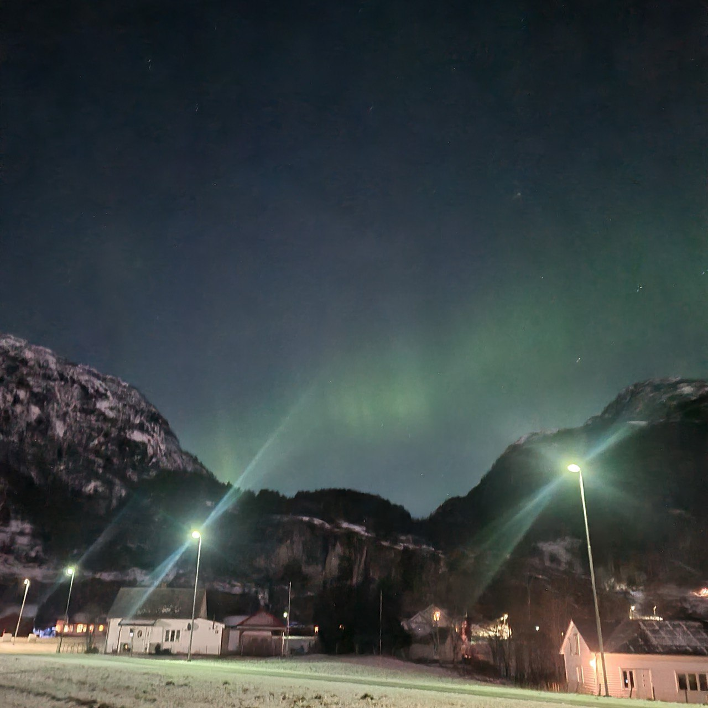

-
UA

- ENG
01 жовт. 2024
 Nesflaten, Norge - Des 2023
Ідея зʼявилася через те, що у українців є труднощі з розумінням процесу підтвердження медичної освіти в Норвегії. Багато речей приходить тільки тоді, коли ви проходите через це самі. Тому, на цьому сайті ви отримаєте інформацію від того, хто, через це як раз і проходить.
Я намагаюсь, щоб інформація, яку я надаю була точною, але можливі помилки. Якщо ви побачили помилку, будь-ласка повідомте в Телеграм.
Фотографії, використані на сайті зроблені моєю дружиною.
Сайт побудований на HUGO з кастомною темою, контент менеджері Tina CMS, діплой GitHub Pages.
Дата останньої редакції статті: 01 жовт. 2024